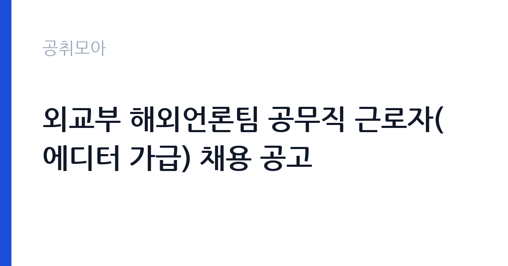

[국가기관] 외교부 해외언론팀 공무직 근로자(에디터 가급) 채용 공고
외교부 · 서울 · 마감 2026-11-11 (D-7) · 출처 나라일터

한눈에 보는 모집 조건
| 기관 | 외교부 |
|---|---|
| 공고명 | 외교부 해외언론팀 공무직 근로자(에디터 가급) 채용 공고 |
| 고용형태 | 공무직 |
| 근무지 | 서울 |
| 게시일 | 2026-11-04 |
| 마감일 | 2026-11-11 (D-7) |
지원자격, 이렇게 읽으세요
- 공무직 근로자(에디터 가급) 1명
- 접수 ~2026-11-11 마감
- 세부 조건은 원문 공고문 확인
공무직 근로자는 공무원이 아니라 근로기준법이 적용되는 근로자이지만 기간의 정함이 없는 무기계약으로 채용되는 경우가 많아 정년까지 근무가 가능합니다. 채용은 공무원 시험과 달리 기관의 자체 전형으로 진행되고 인사 규정과 임금표를 적용받습니다. 이번 공고는 외교부에서 직접 진행하는 자체 전형으로, 응시자격과 제출서류는 공고문에 항목별로 제시됩니다. 이 공고는 공무직 근로자 에디터 가급(영문) 1명을 뽑는 채용입니다. 공지와 원서접수는 2026년 11월 4일부터 11일 23시 59분까지이며, 응시원서 양식과 세부 요건은 별첨 자료에 정리되어 있습니다. 영문 작성·교정 역량이 실질적인 평가 기준이 되고, 관련 경력 연수와 어학 성적 요건이 붙는 형태가 일반적입니다. 공무직 채용이므로 결격사유 조회와 신원 확인 절차가 따릅니다. 접수 마감이 분 단위로 정해져 있으니 서류 준비를 앞당기십시오. 서류는 접수 마감 이후 보완이 되지 않으므로 자격 요건과 증빙 서류를 마감 전에 모두 갖춰야 합니다. 공고문에 명시된 우대 사항은 해당 여부를 확인해 증빙을 첨부해야 가점이 반영됩니다. 우대 사항에 해당하면 증빙을 반드시 첨부해야 하며, 누락하면 가점 없이 평가됩니다.
이 공고의 포인트
이 공고의 첫 번째 포인트는 고용 형태입니다. 무기계약으로 채용되면 정년까지 근무가 가능해 재계약 부담이 없습니다. 반대로 기간제로 채용되는 공고라면 계약 기간을 먼저 확인해야 합니다. 두 번째는 업무 범위가 명확하다는 점입니다. 영문 에디터(해외언론) 직무로 채용되므로 배치 이후 담당 업무가 크게 흔들리지 않습니다. 세 번째는 근무지입니다. 서울 지역 근무로 접근성은 좋지만 그만큼 지원자가 몰리는 지역이므로 경쟁률을 넉넉히 잡아야 합니다. 근무 조건이 공고문에 구체적으로 적혀 있어 지원 전에 판단할 정보가 충분합니다. 다만 선발 인원이 1명으로 많지 않아 자격을 갖춘 지원자가 몰리면 경쟁률이 높아질 수 있습니다.
전형은 어떻게 진행되나
서류전형과 면접전형 외에 직무수행능력 평가가 붙는 경우가 있습니다. 평가 방식은 공고문에 구체적으로 적혀 있으므로 어떤 항목에 배점이 높은지 먼저 파악하십시오. 면접에서는 지원 동기보다 실제 업무 경험에 대한 질문이 많고, 답변의 구체성이 평가를 가릅니다. 전형 일정은 서류 마감 이후 빠르게 진행되므로 연락 가능한 번호를 정확히 기재하고 문자와 메일을 수시로 확인해야 합니다. 최종 단계에서는 결격사유 조회와 신체검사가 진행됩니다. 서류 단계에서 요건을 충족하지 못하면 이후 전형을 준비할 기회가 없으므로, 제출 전 요건 대조를 한 번 더 하는 것이 좋습니다.
원문에서 확인한 전형 방식
외교부 해외언론팀은 다음과 같이 공무직 근로자(에디터 가급(영문))를 채용하고자 하니, 관심 있는 분들의 많은 지원 바랍니다. 1. 채용 직종 및 인원 : 공무직 근로자(에디터 가급(영문)) 1명 2. 공지 및 원서 접수 : 2026.11.4.(수)~11.11.(수) 23:59까지 3. 지원 관련 자세한 사항 및 응시원서 양식 등은 별첨 참조
이런 분께 추천해요
- 영문 작성·교정 경력이 있는 분
- 외교·국제 분야 자료를 다뤄본 경험이 있는 분
- 마감이 촉박한 자료를 처리할 수 있는 분
지원 전 체크리스트
- 응시자격 요건과 경력 기준을 충족하는가 — 경력은 증명서로 입증해야 합니다
- 무기계약 여부와 정년 기준을 공고문에서 확인했는가
- 제출서류 목록을 모두 준비했는가 — 누락 시 서류 단계에서 탈락합니다
- 접수 마감 2026-11-11 이전에 접수 방식을 확인해 제출했는가
모집 일정과 제출 타이밍
공고 게시일은 2026-11-04, 접수 마감은 2026-11-11입니다. 준비 기간은 약 7일로 서류 준비와 자격 증빙을 함께 처리하기에는 넉넉하지 않은 편입니다. 첫 이틀 안에 공고문과 첨부 서식을 내려받아 요건을 확인하고 남은 기간에 증빙 서류를 발급받는 일정이 현실적입니다. 면접은 서류 합격자 발표 후 짧은 간격으로 진행되는 경우가 많으므로 서류 제출과 동시에 면접 준비를 시작하는 편이 안전합니다. 마감일에는 접수 시스템이 몰리므로 하루 전까지 제출을 마치는 것이 좋습니다. 서류 발표일과 면접일 사이가 짧은 경우가 많아 면접 준비는 접수와 동시에 시작하는 편이 좋습니다. 서울 근무지는 대중교통 접근성이 좋은 대신 주차와 통근 시간이 변수입니다. 출퇴근 경로를 미리 확인하십시오. 마감까지 일주일 안팎이 남아 서류 준비와 증빙 발급을 병행해야 합니다. 선발 인원이 한두 명 수준이라 지원자 개개인의 서류 완성도가 그대로 평가에 반영됩니다.
직무 이해하기: 국가기관
외교부 해외언론팀은 외국 언론과 해외 독자에게 우리 정부의 정책과 입장을 전달하는 업무를 맡습니다. 에디터 가급(영문)은 보도자료와 정책 설명 자료, 대변인 논평의 영문판을 작성하고 교정합니다. 외국 기자 문의에 대한 답변 자료를 만들고, 해외 언론 보도를 모니터링해 요약 보고서를 작성합니다. 정상회담이나 장관 발언처럼 시의성이 중요한 자료는 짧은 시간에 마감을 맞춰야 합니다. 부서 특성상 원문의 뉘앙스와 외교적 표현을 정확히 옮기는 것이 핵심입니다. 현장 업무와 사무 업무의 비중은 기관의 사업 일정에 따라 계절별로 달라집니다.
자기소개서 작성 팁
지원서와 제출 자료는 영문 필체의 완성도를 보여주는 데 집중해야 합니다. 작성한 영문 보도자료, 정책 자료, 번역물을 목록으로 정리하고 본인이 맡은 부분을 명확히 밝히십시오. 외교·국제 분야 지식이 있다면 구체적인 사례로 제시하십시오. 자기소개서 자체를 영문으로 요구하는 경우가 많으므로 공고문의 제출 형식을 먼저 확인하십시오. 문항별 글자 수 제한을 먼저 확인하고, 각 문항의 첫 문장에 결론을 배치하는 방식이 읽기 쉽습니다. 지원 동기는 기관의 어떤 사업에 기여하겠다는 한 문장으로 시작하고, 이어서 본인의 경험을 근거로 붙이십시오. 감점을 피하려면 다른 기관에 보낼 수 있는 범용 문장을 그대로 쓰지 않는 것이 중요합니다. 기관 이름과 사업명이 문장 안에 자연스럽게 들어가야 준비도가 드러납니다.
면접 준비 포인트
면접에서는 영문 작성 역량과 시의성 대응을 확인합니다. 외교적 사안을 영문으로 옮길 때 어떤 표현을 선택할지, 마감이 촉박한 자료를 어떻게 처리할지 묻습니다. 실제로 작성한 영문 보도자료나 기고가 있다면 제시할 수 있게 준비하십시오. 우리 정부의 주요 외교 현안을 영문으로 설명해 보라는 요청이 나올 수도 있습니다. 답변은 상황, 판단, 조치의 순서로 정리하면 전달이 분명해집니다. 모르는 질문에는 모른다고 밝히고 확인 방법을 제시하는 편이 억지 답변보다 낫습니다. 마지막에는 근무 의사와 함께 2026-11-11 이후 일정에 언제든 응할 수 있다는 점을 전달하십시오. 모르는 질문에 추측으로 답하면 감점 요인이 되므로, 확인 후 답하겠다고 밝히는 편이 안전합니다.
급여·근무조건 읽는 법
외교부 공무직근로자는 공무직 임금 기준에 따라 가급·나급 등 급수별로 보수가 정해지고, 기본급에 정액급식비·명절휴가비·초과근무수당이 더해집니다. 가급은 같은 직종 안에서도 경력과 역할에 따라 상위 급수에 해당합니다. 구체적인 금액과 수당 항목은 공고문 처우 부분과 별첨 자료에서 확인해야 하며, 확인되지 않은 수치는 이 글에서 제시하지 않습니다. 2026년 적용 최저임금은 시급 10,320원, 월 환산 2,156,880원(주 40시간·209시간 기준)입니다. 고용노동부 고시 제2025-47호로 확정된 금액입니다. 공고문에 금액이 제시되지 않은 항목은 원문 보수표나 처우 설명에서 확인해야 하며 확인되지 않은 수치는 쓰지 않는 것이 원칙입니다. 비교할 때는 월 급여뿐 아니라 상여·명절휴가비·복지포인트·초과근무수당까지 포함한 연간 총액으로 계산하십시오. 기간제라면 계약 기간 동안의 총액을, 무기계약이라면 호봉 상승과 정년까지의 누적 소득을 기준으로 판단하는 편이 정확합니다.
자주 묻는 질문
- 선발 인원은 몇 명인가요?
공고문 기준 1명입니다. 직종별로 인원이 나뉘는 경우가 있으니 모집분야 항목을 함께 확인하십시오. - 근무지는 어디인가요?
서울 지역의 외교부 소속 근무지입니다. 세부 주소와 출퇴근 조건은 원문 공고문에서 확인할 수 있습니다. - 보수는 얼마인가요?
채용 신분(공무직)과 기관 임금 규정에 따라 정해지며 구체적인 금액은 공고문 처우 항목에 제시됩니다. 금액이 공개되지 않은 경우에는 원문의 보수표를 확인하십시오.
함께 보면 좋은 공고
[국가기관] 2026년 제7회 광양우체국 상시계약집배원 채용 공고 — 마감 2026-11-12[국가기관] 제8회 서천우체국 기간제 상시계약집배원(농어촌) 채용 재공고 — 마감 2026-11-12[국가기관] 해병대 덕산대 체력단련장(경기 화성) 공무직근로자 (경기담당) 채용 공고 — 마감 2026-11-13출처: 나라일터 공개정보를 바탕으로 공취모아가 정리한 안내글입니다. 모집 조건·일정은 변경될 수 있으니 지원 전 반드시 원문 공고문을 확인하세요. 본 글은 정보 제공용이며 합격을 보장하지 않습니다.